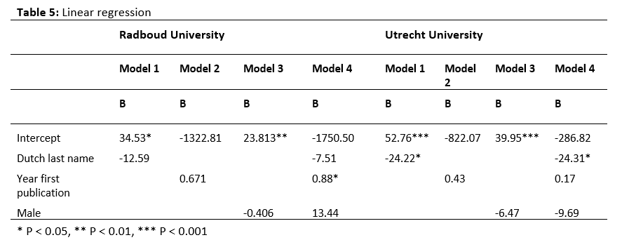

#> [1] "C:/Users/ninab/OneDrive/Documenten/GitHub/labjournal"
Regression
analysis
To examine what determines the percentage of non-Dutch scholars
within ones egonet, we conducted four linear regression models. The
first model contained the ethnicity of the ego, the second model the
year of first publication and the third model gender. Last, all three
effects were calculated in one final model (see “my journal”,
ch. 8).

Radboud University
For Radboud University, we observe that both the ethnicity of the ego
and gender have no significant effect on the percentage of non-Dutch
scholars within the collaboration network. This in contrast with our
expectation that non-Dutch and female scholars would have more non-Dutch
scholars as co-authors. However, in the last model we do see an effect
of age (year of first publication). In line with hypothesis 2b, the
younger academical age of a staff member, the higher the percentage of
non-Dutch collaborators present within their collaboration network
(0.88).
Utrecht University
In constrast with hypothesis 2b and 2c, their seems to be no
significant effect of the year of first publication or gender for
Utrecht University. However, in the first model we see a significant
effect of ethnicity of the ego (-24.22), which remains visible when
adding all other variables in our last model (-24.31). Sociologists at
UU with a Dutch last name have, on average, a lower percentage of
non-Dutch collaborators than sociologists at UU with a non-Dutch last
name. This is in line with our expectations.
Conclusion
We see that the effect of demographic characteristics of the egos on
the percentage of non-Dutch collaborators differs between the two
departments. Whilst for Radboud University the academical age of a staff
member seems to be of influence, for Utrecht University the ethnicity of
the ego has an effect. Therefore, we have to reject hypothesis 2c and
cannot fully confirm hypothesis 2a and 2b.
LS0tDQp0aXRsZTogIlJlZ3Jlc3Npb24iDQphdXRob3I6ICJieTogTmluYSBCcmFudGVuIg0KYmlibGlvZ3JhcGh5OiByZWZlcmVuY2VzLmJpYg0KLS0tDQoNCg0KDQpgYGB7ciwgaW5zdGFsbCByZW1vdGVseSwgZ2xvYmFsc2V0dGluZ3MsIGVjaG89RkFMU0UsIHdhcm5pbmc9RkFMU0UsIHJlc3VsdHM9J2hpZGUnLCBldmFsPUZBTFNFfQ0KaW5zdGFsbC5wYWNrYWdlcygicmVtb3RlcyIpDQpyZW1vdGVzOjppbnN0YWxsX2dpdGh1Yigicmxlc3VyL2tsaXBweSIpDQpgYGAgDQoNCmBgYHtyLCBnbG9iYWxzZXR0aW5ncywgZWNobz1GQUxTRSwgd2FybmluZz1GQUxTRSwgcmVzdWx0cz0naGlkZSd9DQpsaWJyYXJ5KGtuaXRyKQ0KbGlicmFyeShyZ2wpDQoNCmtuaXRyOjpvcHRzX2NodW5rJHNldChlY2hvID0gVFJVRSkNCm9wdHNfY2h1bmskc2V0KHRpZHkub3B0cz1saXN0KHdpZHRoLmN1dG9mZj0xMDApLHRpZHk9VFJVRSwgd2FybmluZyA9IEZBTFNFLCBtZXNzYWdlID0gRkFMU0UsY29tbWVudCA9ICIjPiIsIGNhY2hlPVRSVUUsIGNsYXNzLnNvdXJjZT1jKCJ0ZXN0IiksIGNsYXNzLm91dHB1dD1jKCJ0ZXN0MiIpKQ0Kb3B0aW9ucyh3aWR0aCA9IDEwMCkNCnJnbDo6c2V0dXBLbml0cigpDQoNCg0KDQpjb2xvcml6ZSA8LSBmdW5jdGlvbih4LCBjb2xvcikge3NwcmludGYoIjxzcGFuIHN0eWxlPSdjb2xvcjogJXM7Jz4lczwvc3Bhbj4iLCBjb2xvciwgeCkgfQ0KDQpgYGANCg0KYGBge3Iga2xpcHB5LCBlY2hvPUZBTFNFLCBpbmNsdWRlPVRSVUV9DQprbGlwcHk6OmtsaXBweShwb3NpdGlvbiA9IGMoJ3RvcCcsICdyaWdodCcpKQ0KI2tsaXBweTo6a2xpcHB5KGNvbG9yID0gJ2RhcmtyZWQnKQ0KI2tsaXBweTo6a2xpcHB5KHRvb2x0aXBfbWVzc2FnZSA9ICdDbGljayB0byBjb3B5JywgdG9vbHRpcF9zdWNjZXNzID0gJ0RvbmUnKQ0KYGBgDQoNCg0KYGBge3IsIGVjaG89RkFMU0V9DQojc3RhcnQgd2l0aCBjbGVhbiB3b3Jrc3BhY2UgDQpybShsaXN0PWxzKCkpDQpnZXR3ZCgpDQpgYGANCg0KJm5ic3A7DQombmJzcDsNCg0KIyBSZWdyZXNzaW9uIGFuYWx5c2lzDQpUbyBleGFtaW5lIHdoYXQgZGV0ZXJtaW5lcyB0aGUgcGVyY2VudGFnZSBvZiBub24tRHV0Y2ggc2Nob2xhcnMgd2l0aGluIG9uZXMgZWdvbmV0LCB3ZSBjb25kdWN0ZWQgZm91ciBsaW5lYXIgcmVncmVzc2lvbiBtb2RlbHMuIFRoZSBmaXJzdCBtb2RlbCBjb250YWluZWQgdGhlIGV0aG5pY2l0eSBvZiB0aGUgZWdvLCB0aGUgc2Vjb25kIG1vZGVsIHRoZSB5ZWFyIG9mIGZpcnN0IHB1YmxpY2F0aW9uIGFuZCB0aGUgdGhpcmQgbW9kZWwgZ2VuZGVyLiBMYXN0LCBhbGwgdGhyZWUgZWZmZWN0cyB3ZXJlIGNhbGN1bGF0ZWQgaW4gb25lIGZpbmFsIG1vZGVsIChzZWUgIm15IGpvdXJuYWwiLCBjaC4gOCkuDQoNCiZuYnNwOw0KJm5ic3A7DQoNCiFbXShpbWFnZXMvdGFiZWw1LnBuZykNCg0KJm5ic3A7DQoNCiMgUmFkYm91ZCBVbml2ZXJzaXR5DQoNCkZvciBSYWRib3VkIFVuaXZlcnNpdHksIHdlIG9ic2VydmUgdGhhdCBib3RoIHRoZSBldGhuaWNpdHkgb2YgdGhlIGVnbyBhbmQgZ2VuZGVyIGhhdmUgbm8gc2lnbmlmaWNhbnQgZWZmZWN0IG9uIHRoZSBwZXJjZW50YWdlIG9mIG5vbi1EdXRjaCBzY2hvbGFycyB3aXRoaW4gdGhlIGNvbGxhYm9yYXRpb24gbmV0d29yay4gVGhpcyBpbiBjb250cmFzdCB3aXRoIG91ciBleHBlY3RhdGlvbiB0aGF0IG5vbi1EdXRjaCBhbmQgZmVtYWxlIHNjaG9sYXJzIHdvdWxkIGhhdmUgbW9yZSBub24tRHV0Y2ggc2Nob2xhcnMgYXMgY28tYXV0aG9ycy4gSG93ZXZlciwgaW4gdGhlIGxhc3QgbW9kZWwgd2UgZG8gc2VlIGFuIGVmZmVjdCBvZiBhZ2UgKHllYXIgb2YgZmlyc3QgcHVibGljYXRpb24pLiBJbiBsaW5lIHdpdGggaHlwb3RoZXNpcyAyYiwgdGhlIHlvdW5nZXIgYWNhZGVtaWNhbCBhZ2Ugb2YgYSBzdGFmZiBtZW1iZXIsIHRoZSBoaWdoZXIgdGhlIHBlcmNlbnRhZ2Ugb2Ygbm9uLUR1dGNoIGNvbGxhYm9yYXRvcnMgcHJlc2VudCB3aXRoaW4gdGhlaXIgY29sbGFib3JhdGlvbiBuZXR3b3JrICgwLjg4KS4gDQoNCg0KJm5ic3A7DQoNCiMgVXRyZWNodCBVbml2ZXJzaXR5DQoNCkluIGNvbnN0cmFzdCB3aXRoIGh5cG90aGVzaXMgMmIgYW5kIDJjLCB0aGVpciBzZWVtcyB0byBiZSBubyBzaWduaWZpY2FudCBlZmZlY3Qgb2YgdGhlIHllYXIgb2YgZmlyc3QgcHVibGljYXRpb24gb3IgZ2VuZGVyIGZvciBVdHJlY2h0IFVuaXZlcnNpdHkuIEhvd2V2ZXIsIGluIHRoZSBmaXJzdCBtb2RlbCB3ZSBzZWUgYSBzaWduaWZpY2FudCBlZmZlY3Qgb2YgZXRobmljaXR5IG9mIHRoZSBlZ28gKC0yNC4yMiksIHdoaWNoIHJlbWFpbnMgdmlzaWJsZSB3aGVuIGFkZGluZyBhbGwgb3RoZXIgdmFyaWFibGVzIGluIG91ciBsYXN0IG1vZGVsICgtMjQuMzEpLiBTb2Npb2xvZ2lzdHMgYXQgVVUgd2l0aCBhIER1dGNoIGxhc3QgbmFtZSBoYXZlLCBvbiBhdmVyYWdlLCBhIGxvd2VyIHBlcmNlbnRhZ2Ugb2Ygbm9uLUR1dGNoIGNvbGxhYm9yYXRvcnMgdGhhbiBzb2Npb2xvZ2lzdHMgYXQgVVUgd2l0aCBhIG5vbi1EdXRjaCBsYXN0IG5hbWUuIFRoaXMgaXMgaW4gbGluZSB3aXRoIG91ciBleHBlY3RhdGlvbnMuDQoNCiZuYnNwOw0KDQojIENvbmNsdXNpb24NCg0KV2Ugc2VlIHRoYXQgdGhlIGVmZmVjdCBvZiBkZW1vZ3JhcGhpYyBjaGFyYWN0ZXJpc3RpY3Mgb2YgdGhlIGVnb3Mgb24gdGhlIHBlcmNlbnRhZ2Ugb2Ygbm9uLUR1dGNoIGNvbGxhYm9yYXRvcnMgZGlmZmVycyBiZXR3ZWVuIHRoZSB0d28gZGVwYXJ0bWVudHMuIFdoaWxzdCBmb3IgUmFkYm91ZCBVbml2ZXJzaXR5IHRoZSBhY2FkZW1pY2FsIGFnZSBvZiBhIHN0YWZmIG1lbWJlciBzZWVtcyB0byBiZSBvZiBpbmZsdWVuY2UsIGZvciBVdHJlY2h0IFVuaXZlcnNpdHkgdGhlIGV0aG5pY2l0eSBvZiB0aGUgZWdvIGhhcyBhbiBlZmZlY3QuIFRoZXJlZm9yZSwgd2UgaGF2ZSB0byByZWplY3QgaHlwb3RoZXNpcyAyYyBhbmQgY2Fubm90IGZ1bGx5IGNvbmZpcm0gaHlwb3RoZXNpcyAyYSBhbmQgMmIuDQo=